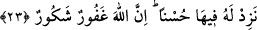

İslamî prensipleri yaşayıp hayata geçirenler “cennet bahçelerindedirler.” Onlar
cennetlerin en hoş ve en nezih mekânlarına yerleşeceklerdir. En güzel saraylar ve en
rahat hayatlar onların olacaktır. Zîrâ bir yerin ravzası böyle olur.
Keşşaf’ın Havâşî’sinde şöyle denmiştir: Ravza su ve yeşilliğin bulunduğu bağ, bağçe,
çil, çimen, havuz gibi her yerin adıdır.
Keşfu’l-esrar’da ise “ravza”; geniş, latif, göz alıcı, reyhan ve her çeşit çiçeklerin
bulunduğu yer olarak anlatılmıştır. Hadis-i şerifte şöyle buyrulur: “Üç şey gözü
nurlandırır. Bunlar yeşilliğe bakmak, akarsuya bakmak ve güzel nurlu yüze
bakmaktır.”[85]
Abdullah b. Abbas (r.a.), “yatmadan önce sürme çekmekte bu cümledendir”
buyurmuşlardır.
Râgıb şöyle demiştir: Âyetteki “onlar cennet bahçelerindedir” sözü, âhirette onlara
hazırlanmış olan zâhirî nimetlere işârettir. Bunun, “kalplerin temiz ve hoş olmasını
sağlayan bir takım ilmî ve ahlâkî güzellikler” olduğu da söylenmiştir.
“Rablerinin yanında onlara diledikleri her şey vardır.” Arzu ettikleri her çeşit nimet
ve lezzetler onlar için mevcuddur.
Âyette “ihtibâk sanatı” uygulanmıştır. Şöyle ki önce “işfâk/korku” zikredilip bu
“emn/güven”in hazfedildiğine delil yapılmıştır. Sonra “cennet” zikredilip bu
“cehennem”in hazfedildiğine delil yapılmıştır.
“İşte büyük lutuf budur.” Müminlere verilen bu lutuf öylesine büyüktür ki artık bunun
yanında başkalarının sahip olduğu dünyalıklar hiç sayılır. Yahut bu lutuf yanında dünya
baştan sona bütün her şeyiyle bir hiçtir. Bu lutuf, ümmet hakkındadır. Peygamberimiz
(s.a.)’in şahsına gelince o, Allah Teâlâ’nın pek özel ve çok büyük bir lutfuna mazhar
olacaktır. Nitekim bununla ilgili olarak: “Ey Habîbim! Allah’ın sana lutfu cidden pek
büyüktür” (Nisâ, 4/113).
23. İşte Allah’ın, îman eden ve iyi işler yapan kullarına müjdelediği nimet budur.
De ki: Ben buna karşılık sizden bir ücret istemiyorum. Ancak (Allah’a) yaklaşmayı
ve (O’nu) sevmenizi istiyorum. Kim bir iyilik işlerse onun sevabını fazlasıyla
veririz. Şüphesiz Allah bağışlayan, şükrün karşılığını verendir.
“İşte Allah’ın, îman eden ve iyi işler yapan kullarını müjdelediği nimet budur.” Bu
öyle bir sevaptır ki, Allah Teâlâ onları Peygamber (s.a.)’in diliyle müjdelemektedir.
Kâşifî şöyle der: Haberin cümle içinde öne alınması, müminlerin sevinçlerini